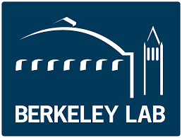

Jangho Park
Assistant Professor
Systems Management Engineering / Industrial Engineering
Sungkyunkwan University, South Korea
Contact Information
Sungkyunkwan University
2066, Seobu-ro, Jangan-gu, Suwon, Gyeonggi, Korea (16419)
Lab: #27415, Engineering Building II
Tel: +82 31-290-7595
janghopark at skku dot edu
About Me
Career

